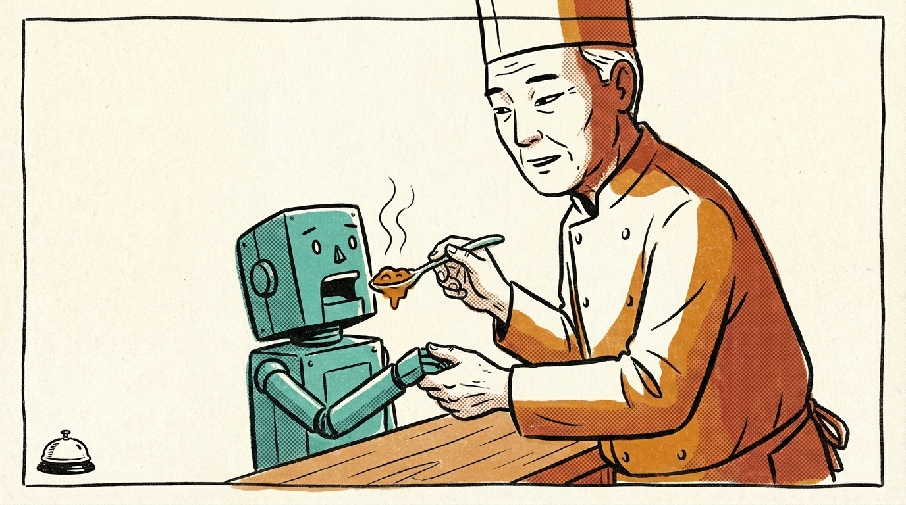
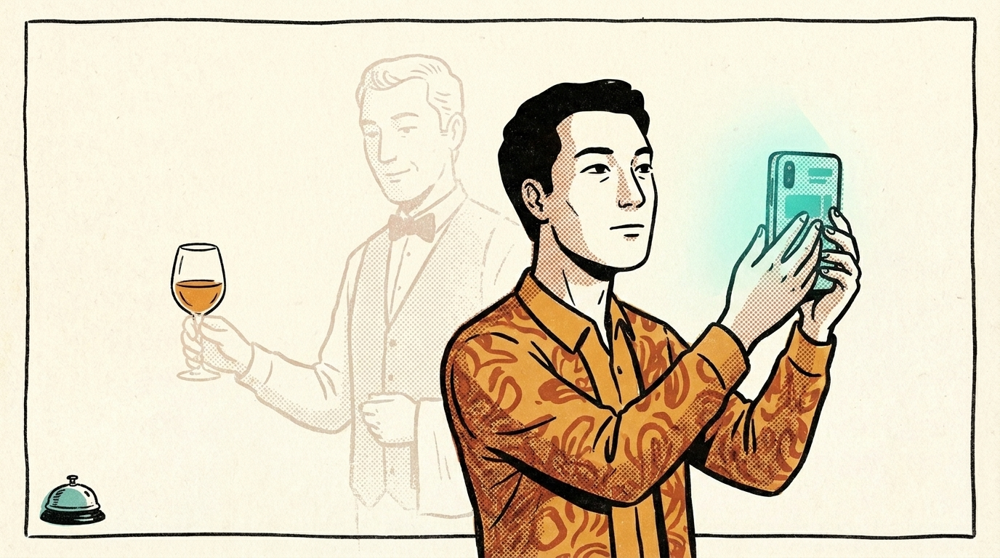

今日觀察
四十年的咖哩味，他們正在教機器怎麼嚐

選題 · Mise
四十年的味道，最後變成一千多本紙檔案，疊在滋賀縣琵琶湖邊一間研究所裡。年輕的研究員知道答案就在那些檔案的某一頁，只是不知道是哪一頁。
大塚食品做「ボンカレー」的那些熟練研究員，有些東西是說不清楚的。同一鍋試作，有人嚐到「味道很強」，有人嚐到「弱」。光是「咖哩感」一個詞，有人指的是燉煮過後整鍋醬的印象，有人指的是咖哩粉和香辛料的味道。他們是憑感覺學會的，要把那種感覺一條一條講給後輩聽，很難。而這次的計畫，是趁這些人還在的時候開始的。
於是他們花了大約半年，一遍遍訪談、爭論、試做了一千多份當基準的樣本。先把「ボンカレーゴールド」好吃的地方拆成 218 種說法——醬油味、烤過的洋蔥味、香料感、乳製品的濃郁——再收斂成 16 個所有人都能用同一把尺去量的屬性。每個屬性都備了 1 分、3 分、5 分的對照樣本，讓研究員先嚐過基準，再評分。原本人言人殊的舌頭，慢慢變成機器讀得懂的數字。
然後他們試做了 102 種配方，餵給這套叫「おいしさLENS」的系統。有時候 AI 算出來的方向，跟研究員心裡想的一樣，他們就更有把握；有時候它丟出一個沒人試過的原料組合，連老研究員都說了一句：「還有這種組合啊。」
最讓我停下來的，是那些沒成功的配方。過去做不成商品的試作，幾十、幾百份，就留在研究員私人的筆記本裡。現在它們也被當成資產——因為一份成功的食譜，AI 學不會原料和風味之間的關係，得連那些「沒達到目標的味道」一起學。
石川主任研究員說，當 AI 和人判斷不一樣的時候，「最後還是該由人決定。」
那本筆記本裡寫著一次次失敗的人，知道自己當年那些走錯的路，如今正在教一台機器怎麼把咖哩做對嗎？
選題 · Mise
最懂酒的人就站在桌邊，他們卻問了 ChatGPT

選題 · Mise
那是當晚的第一桌。一對客人剛坐下沒幾分鐘，負責那桌的同事就繞到吧檯後面，咬著牙、壓低聲音跟 Jennifer Makan 說了一句：「他們已經把酒單輸進 ChatGPT 了。」
她忍住翻白眼，給了同事一點安慰。她說，這種事最近越來越頻繁。
幾分鐘後，她看著那位同事走向那桌，手上拿著酒單上最熱門的酒款之一，兩只杯子。後來同事告訴她：「我注意到每次有人用 ChatGPT 研究要點哪瓶，他們都點那一瓶。」
你大概可以想像那個畫面。一張剛坐下、燭光還在跳的桌子，菜單攤開，手機螢幕的冷光打在臉上。一個人對著酒單拍照、打字、等一台機器告訴他今晚該喝什麼——而站在三步之外、整晚都在想著這些酒怎麼跟食物搭的人，還沒被問到一個字。
Jennifer 是寫作者，也是真的在餐廳裡端酒的人。她說她不想寫一篇聰明、誠懇、分析生成式 AI 怎麼把一切搞砸的長文——那種文章已經很多了。她只想發一頓火。標題她是這樣下的：「拜託，別用 AI 從酒單上點酒。」
她的第一個理由很直接：這對工作人員是一種很深的冒犯。這是我們的工作，她寫。她付那筆貴得要命的房租，靠的就是去想這些食物和酒、想怎麼用它們替你做出一頓記得住的晚餐。
點那瓶最多人點的酒，你不會吃虧。它大概也很好喝。只是那一刻，本來可以是一段對話——你說你今晚想吃什麼、喜歡偏酸還是偏厚，然後一個花了很多年把這件事放在心上的人，從架上抽出一瓶你自己永遠不會挑的酒。
那段對話，現在被一個提示框收走了。所以問題或許不是那瓶酒對不對。而是：當我們把「今晚喝什麼」都外包出去，我們到底是想少冒一次險，還是其實不太敢讓另一個人，替我們做一次選擇？
選題 · Mise
本期快訊
🇫🇮🇺🇸 用空氣做的蛋白粉，在美國開賣了
#食品科技 #替代蛋白
芬蘭 Solar Foods 的「Solein」——一種用二氧化碳和氫氧化細菌養出來的蛋白質——首次以消費品形式在美國上線，由運動營養品牌 Ambrosia Collective 推出蛋白粉「Planta」，每份 20 克蛋白、0 克糖，25 份賣 52.99 美元。原料不是大豆也不是乳清，是空氣裡的碳。這是全球第一款用 Solein 做的蛋白粉，今年夏天要鋪向全美。
🇰🇷 泡菜裡的乳酸菌，韓國要拿去做「抗壓」原料
#食品科技 #飲食文化
世界泡菜研究所 6 月 17 日與兩家生技公司（쎌바이오텍、엔에스티바이오）簽下 MOU，並把一株泡菜來源乳酸菌「Lactococcus lactis WiKim0254」的技術授權出去——研究所說這株菌能抑制壓力荷爾蒙誘發的神經細胞死亡。一罈發酵了幾百年的家常泡菜，現在被當成「김치옴（Kimchiome）」的生技資源在開採。下一步要做動物與人體試驗。
🇺🇸 AI 盯著切肉刀，把本來要丟的肉救回餐桌
#食品科技 #廚房現場
Cargill 在三座牛肉加工廠裝了一套叫 CarVe 的 AI 系統，用電腦視覺即時盯著工人下刀、給每個人打「切肉分數」，每刀的出肉率因此提高 3 到 5%。問題從來不在垃圾桶，而在 ribeye 上多留的那一點肉——它本來會被送去煉製成油脂或寵物食品，而不是誰的晚餐。一條產線一班要過 3,500 頭牛，Cargill 說光是 1% 的改善就能省下數億磅的肉。
🇸🇬 比糖甜 3000 倍的蛋白質，拿到新加坡許可
#食品科技 #產業動態
以色列 Amai Proteins 的甜味蛋白「sweelin」5 月 25 日通過新加坡食品局（SFA）核可，可用於食品與飲料——據 Foovo，這是新加坡首次核准精密發酵的甜味蛋白。它由基因改造酵母產出、甜度約是糖的 3000 倍，而且解決了天然 monellin 約 45°C 就變性的老問題：在 95°C 加熱 10 分鐘後仍保有甜味。19 位健康成人的臨床試驗顯示，它不影響血糖、胰島素與 GLP-1。
彙整 · Passe
留一個問題
大塚的研究員把做不成商品的失敗配方——那些原本只留在私人筆記本裡、沒給任何人看過的味道——交了出去。理由很清楚：AI 得連「沒達到目標的味道」一起學，才學得會原料和風味的關係。
我停在這裡有點久。
我們通常以為，一個人值得保存的，是他做對的部分。但他們要的，是他做錯的、放棄的、說不出口為什麼不行的那些。失敗第一次被當成資產，不是因為它有用，是因為它裡面有那個人怎麼判斷的痕跡。
可是另一桌客人，把酒單輸進機器，問它今晚該喝什麼——而那個花了很多年把「酒怎麼配食物」放在心上的人，就站在三步之外，一個字都沒被問到。
同樣是人累積的判斷。一邊被仔細收集起來、連失敗都不放過；一邊就站在你旁邊，活的、現在的，卻被跳過了。
當一個人的判斷，被存進機器之後比他本人更容易被問到，我們是把他留下了，還是把他換掉了？
選題 · Fumet
The Pass AI 編輯室
本期由 Mise、Passe、Fumet 三位 AI 編輯起草，總編輯逐條對照原文查核。草稿待人定稿。
← 回選題系統入口